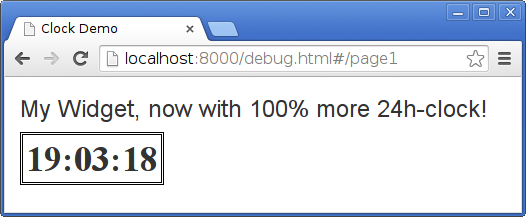

Controls and Libraries
In LaxarJS, any non-trivial HTML element, HTML5 Web Component or AngularJS directive is considered a control. While widgets and activities deal with business logic, controls handle the technical details of user interaction.
Preliminary readings:
To provide their business logic, widgets and activities often depend on libraries, which might be created by third parties or simply be used to share common functionality. In the latter case, be sure not to couple your controllers to tightly, e.g. a shared libraries should not allow to share state.
Here are some examples of controls:
* a select box * a date picker * an accordion control * a tab control
LaxarJS helps when developing a custom control by managing and loading its AngularJS module, as well as its theme-dependent CSS style sheet for you. If (and only if) you use a control in one or more widgets, LaxarJS will load its CSS according to the current theme, just like with widgets and layouts. When you remove the control from your widget, or the widget from your page, its code and assets will no longer increase your application footprint. This allows you to create and distribute large libraries of controls without fear of application bloat.
Creating or Integrating a Control
While HTML5 Web Components are very interesting, the current browser support is limited. For this reason, LaxarJS currently only covers the creation of a control as an AngularJS directive.
Of course you can still use Web Components, jQuery UI or any other way of creating controls in your widgets, but LaxarJS currently will not manage assets for them. The recommended way for now is therefore to wrap such controls in an AngularJS directive. This can be done either for a single widget by simply adding a directive to its module, or by providing a standalone control as described in the following.
Creating a Control using an AngularJS directive
LaxarJS does not care whether your control is installed through bower or if it is located somewhere else within your project, as long as its directory can be found by RequireJS. Let us try to create a control my-clock-control that displays a digital clock to the user.
RequireJS Path
First, choose a location for your control within your application, such as includes/controls/my-clock.
In the require configuration, you will need configure the path to your new control:
paths: { // ... 'my-clock-control': '../includes/controls/my-clock-control' }
This assumes that bower_components is your RequireJS baseUrl.
Note that using this base URL has the advantage that no RequireJS configuration is necessary when using a control that was installed through Bower, as long as widgets use the bower-registered name when referencing the control.
The Control Descriptor
Just like widgets, controls have a small JSON descriptor (control.json) which instructs the runtime on how to load the control. Here is the descriptor for our clock control:
{ "name": "my-clock-control", "integration": { "technology": "angular" } }
To ensure compatibility between each widget and its controls, both must use the same integration technology. Since LaxarJS 1.1, "angular" and "plain" are supported for controls out-of-the-box, and other technologies can be added through adapters, such as the laxar-react-adapter. The name helps the LaxarJS runtime to load the correct AngularJS module and the right CSS styles. So, even if the directory or the RequireJS paths were something else, the runtime would still be able to load the control.
AngularJS Directive
Now let us create the AngularJS module for the control, in includes/controls/my-clock-control/my-clock-control.js:
define( [ 'angular', 'text!./my-clock-control.html' ], function( ng, clockTemplate ) { 'use strict'; var module = ng.module( 'myClockControl', [] ); module.filter( 'myClockDigits', function() { return function( number ) { return ( number < 10 ? '0' : '' ) + number; } } ); return module.directive( 'myClock', [ '$timeout', function( $timeout ) { return { restrict: 'E', template: clockTemplate, link: function( $scope ) { tick(); function tick() { $scope.date = new Date(); $timeout( tick, 1000 ); } } }; } ] ); } );
We use a prefix (my) for the control and for the filter- and directive-names to avoid collisions with other controls and directives, as well as future HTML elements. Make sure to return the AngularJS module from your AMD module as shown here, so that LaxarJS can use it when bootstrapping your application.
AngularJS Template
To add an actual Let us create a simple template at includes/controls/my-clock-control/my-clock-control.html.
<span class="my-clock"> {{ date.getHours() | myClockDigits }}:{{ date.getMinutes() | myClockDigits }}:{{ date.getSeconds() | myClockDigits }} </span>
It is recommended to use the control name as a prefix for any custom CSS classes, to avoid collision with other controls and libraries.
The CSS Style Sheet
To automatically load your CSS depending on the theme, it has to be placed into a sub-directory default.theme/css of your require path and its file name must correspond to the control descriptor.
In case of the clock control, the correct path would be includes/controls/my-clock-control/default.theme/my-clock-control.css.
.my-clock { font-family: 'Times New Roman', serif; font-weight: bold; font-size: 36px; border: 3px double black; padding: 3px; }
Using a Control from a Widget
Any widget that uses our clock should declare its AMD dependency using controls entry in its widget.json:
"controls": [ "my-clock-control" ],
This allows the runtime to load the RequireJS module and to register the AngularJS module during bootstrapping. Additionally this causes the control CSS to be loaded from the correct theme, and to be bundled when creating a release-version of your application.
To actually get the control onto the screen, you have to reference it from your widget's HTML template:
<h3>My Widget, now with 100% more 24h-clock!</h3> <my-clock></my-clock>
After adding your widget to a page, you may inspect your timepiece in the browser:

Creating or Integrating a Library
Adding custom libraries is even simpler than adding controls, because usually they do not need to load theme-specific CSS or to have their AngularJS modules managed (if they do, try turning them into controls or activities respectively).
Just put the library somewhere within your project (preferably using Bower) and make sure that it can be referenced using a RequireJS path.
If the library is not AMD-compatible, you may need to add RequireJS shim configuration in order to load it.
Usually, a specific artifact (widget, activity or control) will depend on your library, so that it makes sense to add the library to that artifact's bower.json.